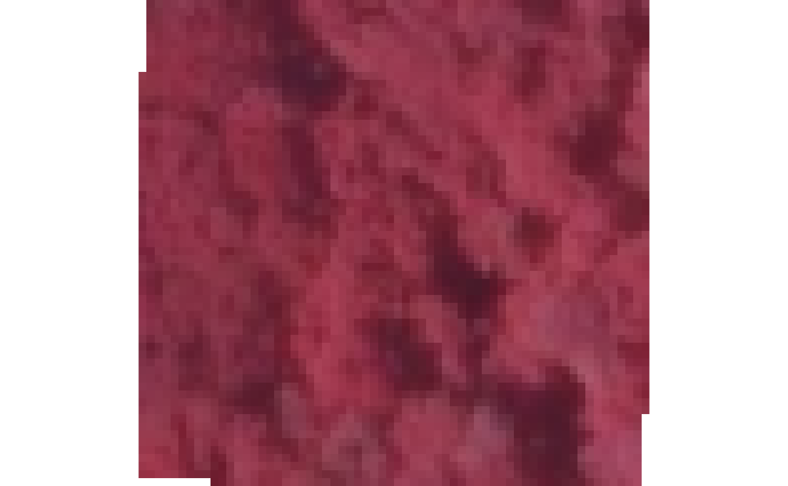
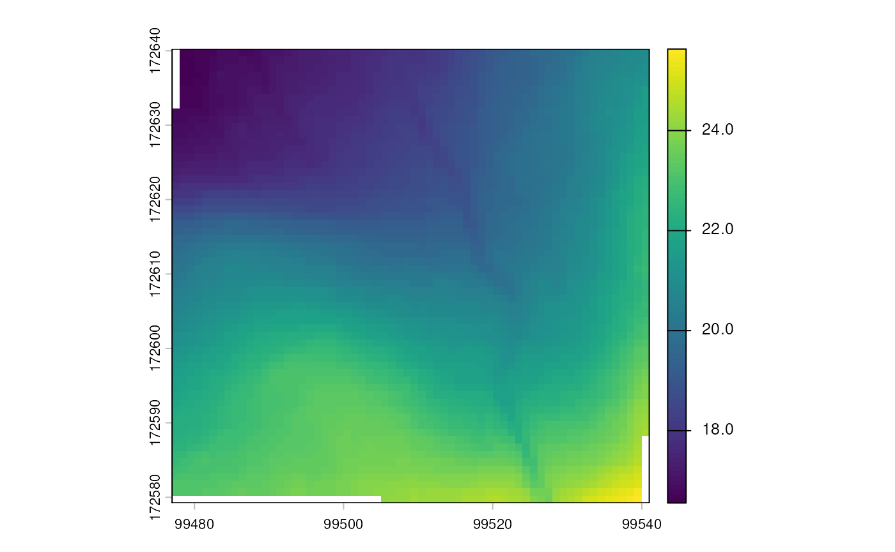

vignettes/wfs_wcs.Rmd
wfs_wcs.Rmd
library(sf)
#> Linking to GEOS 3.10.2, GDAL 3.4.1, PROJ 8.2.1; sf_use_s2() is TRUE
library(dplyr)
#>
#> Attaching package: 'dplyr'
#> The following objects are masked from 'package:stats':
#>
#> filter, lag
#> The following objects are masked from 'package:base':
#>
#> intersect, setdiff, setequal, union
library(inbospatial)A WFS or Web Feature Service allows you to download vector spatial
data from the web. A WCS or Web Coverage Service is similar, but is used
for raster spatial data. In this vignette, we will show how to the
functions get_feature_wfs() and
get_coverage_wcs() can be used to get data into your R
session from these services.
For a more in-depth explanation about WFS services, we refer to the INBO tutorial about WFS. The tutorial takes a
more hands-on coding approach to getting data from a WFS, whereas in
this vignette much of the coding stuff is hidden away in the
get_feature_wfs() function.
wfs_regions <-
"https://eservices.minfin.fgov.be/arcgis/services/R2C/Regions/MapServer/WFSServer" # nolint
bel_regions <- get_feature_wfs(
wfs = wfs_regions,
layername = "regions",
crs = "EPSG:31370"
)
bel_regions
#> Simple feature collection with 3 features and 9 fields
#> Geometry type: MULTIPOLYGON
#> Dimension: XY
#> Bounding box: xmin: 22075.25 ymin: 21098.03 xmax: 295262.3 ymax: 243969
#> Projected CRS: BD72 / Belgian Lambert 72
#> # A tibble: 3 × 10
#> gml_id AdReKey RecId AdCoKey NameFRE NameDUT NameGER FiscSitId LastUpdDTS
#> <chr> <int> <int> <int> <chr> <chr> <chr> <int> <chr>
#> 1 Regions.12 2000 2.00e6 1000 Région… Vlaams… Flämis… 7 2022-03-3…
#> 2 Regions.13 3000 2.00e6 1000 Région… Waals … Wallon… 7 2022-03-3…
#> 3 Regions.11 4000 2.00e6 1000 Région… Brusse… Region… 7 2022-03-3…
#> # ℹ 1 more variable: SHAPE <MULTIPOLYGON [m]>You can achieve (almost) the same result using a combination of
sf::read_sf() and sf::st_transform().
bel_regions2 <- read_sf(paste0("WFS:", wfs_regions),
layer = "regions"
) %>%
st_transform(crs = 31370)
waldo::compare(bel_regions, bel_regions2,
x_arg = "inbospatial", y_arg = "sf",
max_diffs = 8
)
#> `inbospatial$AdReKey` is an integer vector (2000, 3000, 4000)
#> `sf$AdReKey` is a character vector ('02000', '03000', '04000')
#>
#> `inbospatial$AdCoKey` is an integer vector (1000, 1000, 1000)
#> `sf$AdCoKey` is a character vector ('01000', '01000', '01000')
#>
#> `inbospatial$LastUpdDTS` is a character vector ('2022-03-31T00:00:00', '2022-03-31T00:00:00', '2022-03-31T00:00:00')
#> `sf$LastUpdDTS` is an S3 object of class <Date>, a double vector
#>
#> `class(inbospatial$SHAPE)`: "sfc_MULTIPOLYGON" "sfc"
#> `class(sf$SHAPE)`: "sfc_MULTISURFACE" "sfc"
#>
#> `attr(inbospatial$SHAPE, 'bbox')`: "((22075.25,21098.03),(295262.3,243969))"
#> `attr(sf$SHAPE, 'bbox')`: "((21991.63,21162.16),(295167.1,244027.2))"
#>
#> `attr(inbospatial$SHAPE, 'crs')$input`: "BD72 / Belgian Lambert 72"
#> `attr(sf$SHAPE, 'crs')$input`: "EPSG:31370"
#>
#> `class(inbospatial$SHAPE[[1]])`: "XY" "MULTIPOLYGON" "sfg"
#> `class(sf$SHAPE[[1]])`: "XY" "MULTISURFACE" "sfg"
#>
#> `inbospatial$SHAPE[[1]][[1]]` is a list
#> `sf$SHAPE[[1]][[1]]` is an S3 object of class <XY/POLYGON/sfg>, a list
#>
#> And 42 more differences ...There are however a number of differences. Most notably, a couple of
fields have a different field type and the geometry column is a
"MULTIPOLYGON" in the first instance yet a
"MULTISURFACE" in the second case. The reason for these
differences is that get_feature_wfs() retrieves whatever
information that is identified from the WFS request - in the same way as
you would paste the request in the browser. This result is then saved
temporarily to a .GML file and read with
sf::read_sf(). Passing the WFS directly to the
dsn argument of sf::read_sf, on the other
hand, will translate the request to a form that will pass through the GDAL WFS driver,
which handles field specifications by reading them from a
DescribeFeatureType request:
At the first opening, the content of the result of the
GetCapabilitiesrequest will be appended to the file, so that it can be cached for later openings of the dataset. The same applies for theDescribeFeatureTyperequest issued to discover the field definition of each layer.
wfs_vrbg <-
"https://geo.api.vlaanderen.be/VRBG/wfs"
prov <- get_feature_wfs(
wfs = wfs_vrbg,
layername = "VRBG:Refprv",
cql_filter = "NAAM='West-Vlaanderen'"
)
prov
#> Simple feature collection with 1 feature and 7 fields
#> Geometry type: MULTISURFACE
#> Dimension: XY
#> Bounding box: xmin: 21991.63 ymin: 155928.6 xmax: 90410.78 ymax: 229724.6
#> Projected CRS: BD72 / Belgian Lambert 72
#> # A tibble: 1 × 8
#> gml_id UIDN OIDN TERRID NAAM NISCODE NUTS2 SHAPE
#> <chr> <dbl> <dbl> <dbl> <chr> <chr> <chr> <MULTISURFACE [m]>
#> 1 Refprv.3 20 3 351 West-Vlaa… 30000 BE25 (POLYGON ((80681.53 2276…Here, we could have also used sf::read_sf() in
combination with an OGR SQL query:
prov2 <- read_sf(paste0("WFS:", wfs_vrbg),
query = "select * from Refprv where NAAM='West-Vlaanderen'"
)
waldo::compare(prov, prov2)
#> ✔ No differencesThis time, both methods yield the same result.
wfs_vrbg <-
"https://geo.api.vlaanderen.be/VRBG/wfs"
prov_fields <- get_feature_wfs(
wfs = wfs_vrbg,
layername = "VRBG:Refprv",
crs = "EPSG:31370",
property_name = paste("NAAM", "NUTS2", "SHAPE", sep = ",")
)
prov_fields
#> Simple feature collection with 5 features and 2 fields
#> Geometry type: MULTISURFACE
#> Dimension: XY
#> Bounding box: xmin: 21991.63 ymin: 153058.3 xmax: 258871.8 ymax: 244027.2
#> Projected CRS: BD72 / Belgian Lambert 72
#> # A tibble: 5 × 3
#> NAAM NUTS2 SHAPE
#> <chr> <chr> <MULTISURFACE [m]>
#> 1 Antwerpen BE21 (POLYGON ((178136.3 244009.2, 178131.2 244010.4, 178133…
#> 2 Vlaams Brabant BE24 (POLYGON ((200484.9 193541, 200484.8 193541.2, 200484.5…
#> 3 West-Vlaanderen BE25 (POLYGON ((80681.53 227626.5, 80777.99 228143, 80661.88…
#> 4 Limburg BE22 (POLYGON ((231494.3 219142.5, 231194.3 219455.2, 230929…
#> 5 Oost-Vlaanderen BE23 (POLYGON ((145735.2 220358.3, 145217.2 220640.1, 145216…Again, we can use sf::read_sf() in combination with an
OGR SQL
query:
kmi <- "https://opendata.meteo.be/service/wfs"
kmi_stations <- get_feature_wfs(
wfs = kmi,
layer = "synop:synop_station"
)
kmi_stations
#> Simple feature collection with 22 features and 5 fields
#> Geometry type: POINT
#> Dimension: XY
#> Bounding box: xmin: 2.8873 ymin: 49.6204 xmax: 6.0734 ymax: 51.3474
#> Geodetic CRS: WGS 84
#> # A tibble: 22 × 6
#> gml_id code altitude date_begin date_end
#> <chr> <int> <dbl> <dttm> <dttm>
#> 1 synop_station.6490.19… 6490 482 1952-01-01 00:00:00 NA
#> 2 synop_station.6476.19… 6476 557 1952-01-01 00:00:00 NA
#> 3 synop_station.6414.20… 6414 24.8 2003-08-01 07:00:00 NA
#> 4 synop_station.6418.20… 6418 12.1 2005-12-01 00:00:00 NA
#> 5 synop_station.6438.20… 6438 4 2012-08-05 00:00:00 NA
#> 6 synop_station.6446.20… 6446 101. 2001-08-23 00:00:00 2003-12-09 08:00:00
#> 7 synop_station.6447.20… 6447 101. 2003-12-01 00:00:00 NA
#> 8 synop_station.6477.20… 6477 39.3 2004-06-29 00:00:00 NA
#> 9 synop_station.6478.19… 6478 178 1952-01-01 00:00:00 NA
#> 10 synop_station.6439.20… 6439 8.3 2007-10-22 00:00:00 NA
#> # ℹ 12 more rows
#> # ℹ 1 more variable: the_geom <POINT [°]>This is a list of all KMI stations. You can plot it with
leaflet or mapview to see the stations on a
map and learn that -for instance- Ukkel has code 6447. So let’s extract
the maximum daily temperatures for Ukkel starting from the year
2000.
kmi_synop <- get_feature_wfs(
wfs = kmi,
layername = "synop:synop_data",
property_name = paste("code", "timestamp", "temp_max",
"the_geom",
sep = ","
),
cql_filter = "((code = 6447) AND (temp_max IS NOT NULL) AND
(timestamp >= '2000-01-01 00:00:00.000'))"
)
kmi_synop
#> Simple feature collection with 8627 features and 3 fields
#> Geometry type: POINT
#> Dimension: XY
#> Bounding box: xmin: 4.3579 ymin: 50.7967 xmax: 4.3579 ymax: 50.7969
#> Geodetic CRS: WGS 84
#> # A tibble: 8,627 × 4
#> code timestamp temp_max the_geom
#> <int> <dttm> <dbl> <POINT [°]>
#> 1 6447 2021-08-06 18:00:00 20.6 (4.3579 50.7969)
#> 2 6447 2021-09-16 18:00:00 20.9 (4.3579 50.7969)
#> 3 6447 2021-09-17 18:00:00 22.2 (4.3579 50.7969)
#> 4 6447 2021-09-18 18:00:00 23 (4.3579 50.7969)
#> 5 6447 2021-09-19 18:00:00 21.7 (4.3579 50.7969)
#> 6 6447 2021-09-20 18:00:00 19 (4.3579 50.7969)
#> 7 6447 2021-09-21 18:00:00 18.3 (4.3579 50.7969)
#> 8 6447 2021-09-22 18:00:00 19.8 (4.3579 50.7969)
#> 9 6447 2021-08-07 18:00:00 20.6 (4.3579 50.7969)
#> 10 6447 2021-08-08 18:00:00 20.1 (4.3579 50.7969)
#> # ℹ 8,617 more rows
wfs_bwk <-
"https://geo.api.vlaanderen.be/BWK/wfs"
bwk_bbox <- get_feature_wfs(
wfs = wfs_bwk,
layername = "BWK:Bwkhab",
crs = "EPSG:31370",
bbox = c(xmin = 142600, ymin = 153800, xmax = 146000, ymax = 156900)
)
bwk_bbox
#> Simple feature collection with 670 features and 32 fields
#> Geometry type: CURVEPOLYGON
#> Dimension: XY
#> Bounding box: xmin: 137307.1 ymin: 153734.4 xmax: 146672.9 ymax: 160747.2
#> Projected CRS: BD72 / Belgian Lambert 72
#> # A tibble: 670 × 33
#> gml_id UIDN OIDN TAG EVAL EENH1 EENH2 EENH3 EENH4 EENH5 EENH6 EENH7
#> <chr> <dbl> <dbl> <chr> <chr> <chr> <chr> <chr> <chr> <chr> <chr> <chr>
#> 1 Bwkhab.6… 1.33e6 769462 3785… z va qe vc NA NA NA NA
#> 2 Bwkhab.6… 7.29e5 706254 5330… w ni que NA NA NA NA NA
#> 3 Bwkhab.7… 1.37e6 814715 2468… m ur NA NA NA NA NA NA
#> 4 Bwkhab.6… 1.32e6 756501 4075… m ua NA NA NA NA NA NA
#> 5 Bwkhab.7… 7.35e5 712457 5393… z fe NA NA NA NA NA NA
#> 6 Bwkhab.7… 1.38e6 819439 3947… z cg NA NA NA NA NA NA
#> 7 Bwkhab.9… 7.57e5 734549 5779… w pmp lar NA NA NA NA NA
#> 8 Bwkhab.7… 7.35e5 712603 5394… w pmb lar cas NA NA NA NA
#> 9 Bwkhab.6… 1.29e6 705334 5321… z qe cor NA NA NA NA NA
#> 10 Bwkhab.7… 7.35e5 712626 5394… z kw qs NA NA NA NA NA
#> # ℹ 660 more rows
#> # ℹ 21 more variables: EENH8 <chr>, V1 <chr>, V2 <chr>, V3 <chr>, HERK <chr>,
#> # INFO <chr>, BWKLABEL <chr>, HAB1 <chr>, PHAB1 <int>, HAB2 <chr>,
#> # PHAB2 <int>, HAB3 <chr>, PHAB3 <int>, HAB4 <chr>, PHAB4 <int>, HAB5 <chr>,
#> # PHAB5 <int>, HERKHAB <chr>, HERKPHAB <chr>, HABLEGENDE <chr>,
#> # SHAPE <CURVEPOLYGON [m]>This returns a CURVEPOLYGON geometry type. We can use a
couple of sf functions to cast this to regular
polygons:
bwk_bbox %>%
st_cast("GEOMETRYCOLLECTION") %>%
st_collection_extract("LINESTRING") %>%
st_cast("POLYGON") %>%
st_geometry() %>%
plot()This can also be done using the wkt_filter argument from
sf::read_sf.
wfs_soiltypes <-
"https://www.dov.vlaanderen.be/geoserver/bodemkaart/bodemtypes/wfs"
x_lam <- 173995
y_lam <- 212093
soil_type <- get_feature_wfs(
wfs = wfs_soiltypes,
layername = "bodemkaart:bodemtypes",
crs = "EPSG:31370",
cql_filter = sprintf(
"INTERSECTS(geom,POINT(%s %s))",
x_lam, y_lam
)
)
soil_type
#> Simple feature collection with 1 feature and 45 fields
#> Geometry type: MULTISURFACE
#> Dimension: XY
#> Bounding box: xmin: 173846.5 ymin: 211962.5 xmax: 174030.9 ymax: 212190
#> Projected CRS: BD72 / Belgian Lambert 72
#> # A tibble: 1 × 46
#> gml_id gid id_kaartvlak Bodemtype Unibodemtype Bodemserie
#> * <chr> <int> <int> <chr> <chr> <chr>
#> 1 bodemtypes.72727 67754 67754 s-Pgp3(v) s-Pgp3(v) Pgp
#> # ℹ 40 more variables: Beknopte_omschrijving_bodemserie <chr>,
#> # Substraat_legende <chr>, Gegeneraliseerde_legende <chr>,
#> # Substraat_code <chr>, Substraat_Vlaanderen <chr>, Textuurklasse_code <chr>,
#> # Textuurklasse <chr>, Drainageklasse_code <chr>, Drainageklasse <chr>,
#> # Profielontwikkelingsgroep_code <chr>, Profielontwikkelingsgroep <chr>,
#> # Fase_code <chr>, Fase <chr>, Variante_van_het_moedermateriaal_code <chr>,
#> # Variante_van_het_moedermateriaal <chr>, …Example of a false-colour infrared image. The three bands of the
image are visualized using terra::plotRGB.
bbox <- sf::st_bbox(
c(xmin = 99477, xmax = 99541, ymin = 172580, ymax = 172640),
crs = sf::st_crs(31370)
)
omz <- get_coverage_wcs(
wcs = "omz",
bbox = bbox,
layername = "OI.OrthoimageCoverage.OMZ.CIR",
resolution = 1,
version = "1.0.0"
)
terra::plotRGB(omz)
Example of extracting the digital terrain model for the same bounding box:
dtm <- get_coverage_wcs(
wcs = "dtm",
bbox = bbox,
layername = "EL.GridCoverage.DTM",
resolution = 1)
terra::plot(dtm)